UX/UI дизайн
UI термины
UI ― пользовательский интерфейс, проще говоря ― оформление сайта: сочетания цветов, шрифты, иконки и кнопки.
Юзабилити (Usability)
Юзабилити — насколько легко и интуитивно понятно пользователю использовать тот или иной объект, будь то компьютерная программа, веб-сайт, мобильное приложение, бытовое устройство и т.д.
Высокая юзабилити означает, что пользователь может эффективно, быстро и с удовольствием использовать тот или иной продукт или сервис. Это очень важно для любых интерактивных систем, которыми пользуется человек.
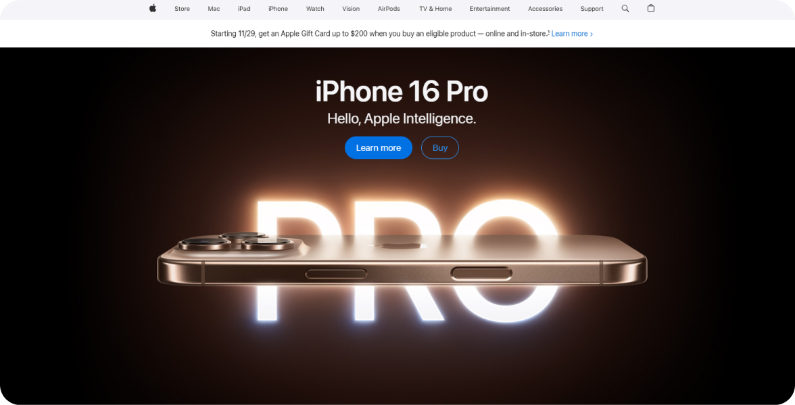
Скриншот сайта Apple
- Четкая структура сайта и логичная навигация позволяют быстро найти нужную информацию.
- Простые и понятные пути совершения основных действий (например, покупка или оформление заказа).
- Интуитивно понятный дизайн с минимумом сложных элементов.
- Приятный и стильный визуальный дизайн.
- Отсутствие раздражающих факторов (назойливая реклама, сложные формы и пр.).
Макет (Layout)
Макет — первичный визуальный образ будущего сайта, который помогает планировать его структуру, дизайн и взаимодействие с пользователем.
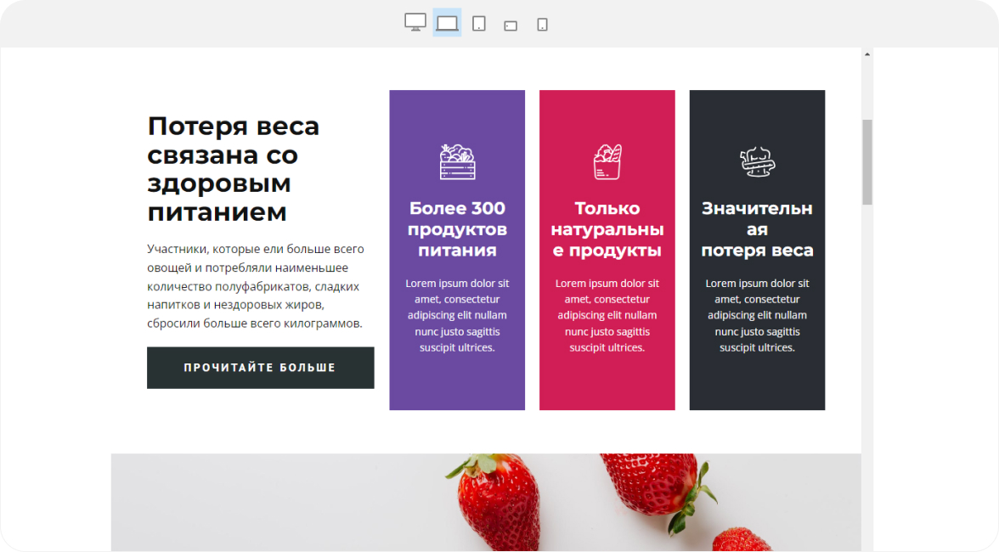
Скриншот сайта про здоровьеNicepage
Макет в веб-дизайне - это:
1. Черновой эскиз сайта. Он показывает, как будут располагаться на странице основные блоки: шапка, меню, контент, футер и т.д.
2. Прототип дизайна сайта. На макете можно увидеть цветовую гамму, шрифты, иконки и другое оформление, которое будет использовано.
3. Схема навигации. Макет демонстрирует, как пользователь будет перемещаться по страницам сайта, переходить по ссылкам.
4. Основа для программирования. На базе макета веб-разработчики создают реальную html-верстку и программируют функциональность.
Визуальный дизайн (Visual Design)
Визуальный дизайн — направление дизайна, которое отвечает за создание внешнего, визуального облика объекта.
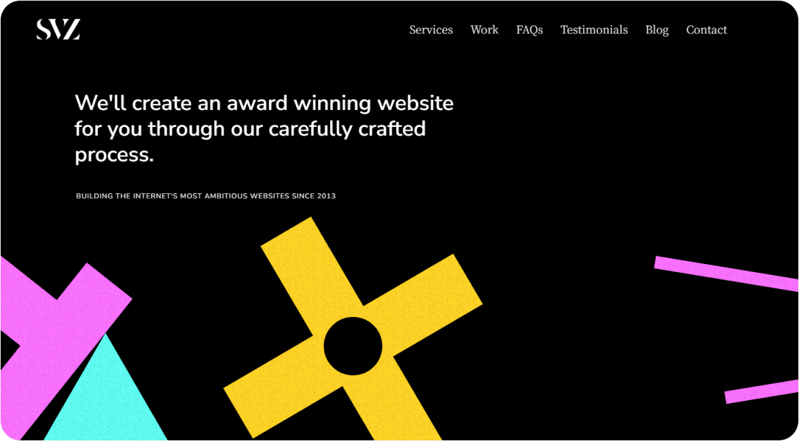
Скриншот сайта SVZ Design
Визуальный дизайн - это:
1. Создание визуального образа. Визуальный дизайнер разрабатывает иллюстрации, изображения, графику, которые будут формировать внешний вид объекта.
2. Формирование стиля. Визуальный дизайн определяет цветовую палитру, типографику, композицию элементов, чтобы сформировать целостный визуальный стиль.
3. Улучшение взаимодействия. Визуальные элементы должны облегчать восприятие и использование объекта (сайта, приложения, печатной продукции и т.д.).
4. Передача идеи/настроения. Визуальный дизайн помогает донести определенные эмоции, ценности, идеи через визуальные образы.
Адаптивный дизайн
Адаптивный дизайн — это подход в веб-дизайне, который обеспечивает оптимальное отображение контента на различных устройствах и экранах, подстраивая макет и элементы интерфейса под конкретные размеры и разрешения экрана.
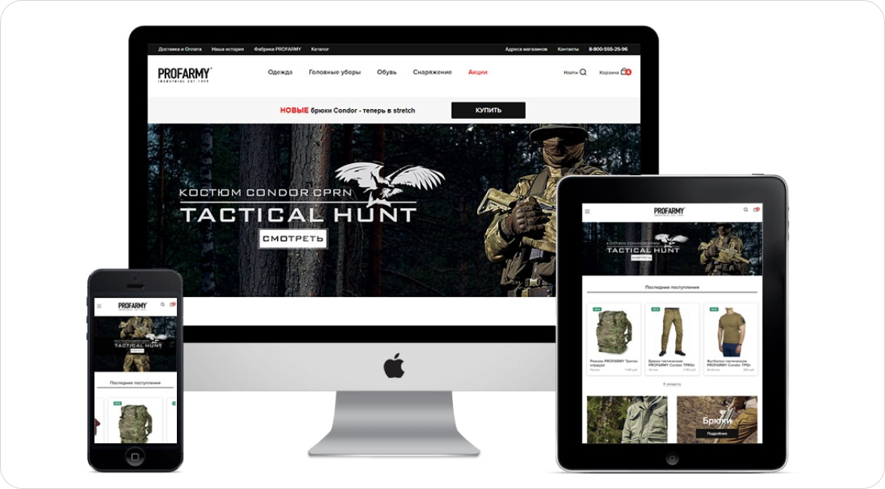
Адаптивный дизайн - это:
1. Гибкая верстка. Контент, изображения и другие элементы меняют свои размеры и расположение в зависимости от экрана (компьютер, планшет, смартфон и т.д.).
2. Единый дизайн. Независимо от устройства, пользователь видит один и тот же дизайн сайта, но с оптимальным отображением на его экране.
3. Улучшение взаимодействия. Адаптивный дизайн делает управление сайтом удобным и на мобильных устройствах, и на компьютерах.
4. Повышение конверсии. Хороший адаптивный дизайн повышает вовлечённость и продажи, т.к. сайт отлично смотрится и работает на любом экране.
Взаимодействие (Interaction)
Взаимодействие — область, которая отвечает за то, как пользователи взаимодействуют с веб-сайтом или веб-приложением.
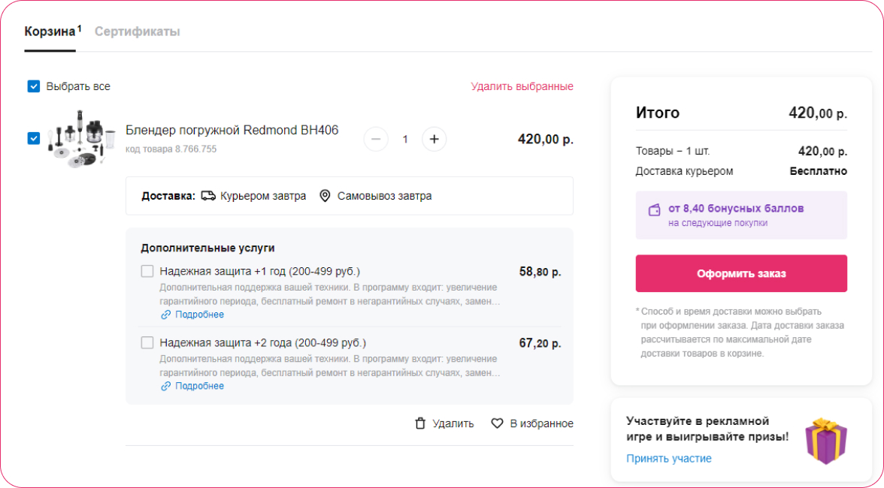
Скриншот сайта интернет-магазина21 vek
Понятная и удобная форма оформления заказа с пошаговым процессом. Возможность выбора способа доставки и оплаты.
Навигация (Navigation)
Навигация — система, которая помогает пользователям перемещаться по сайту и находить нужную информацию или функции.
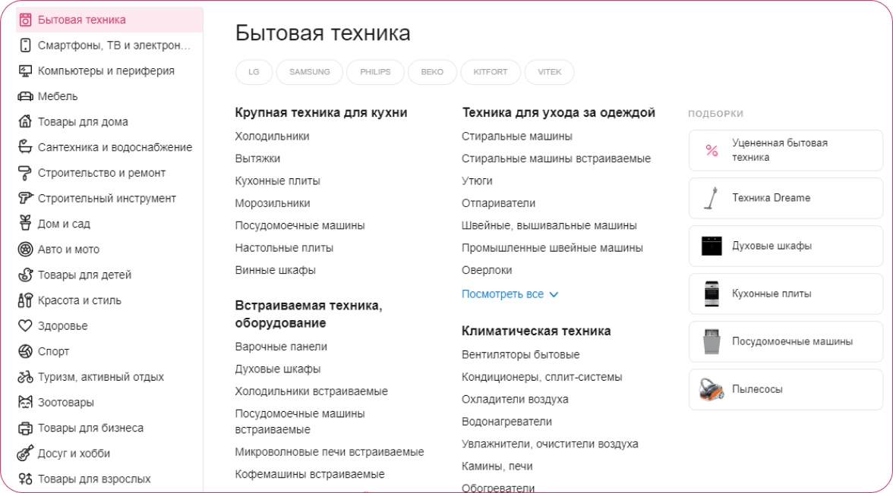
Скриншот сайта интернет-магазина21 vek
Навигация - это:
1. Меню и ссылки. Главное меню сайта, которое позволяет переходить между основными разделами. Ссылки внутри текста, ведущие к связанному контенту. Дополнительные меню, например, в футере или боковой панели.
2. Структура сайта. Логичная иерархия и группировка страниц и разделов. Четкое разделение контента по категориям и подкатегориям.
3. Поиск и фильтры. Возможность быстрого поиска по сайту с помощью строки поиска. Фильтры, позволяющие сортировать и находить нужный контент.
4. Вспомогательные элементы. Кнопки "Назад", "Домой", "Вверх" для быстрого перемещения.
Микровзаимодействие (Micro-interactions)
Микровзаимодействие — небольшие, но важные элементы взаимодействия, которые повышают удобство использования сайта и улучшают общий пользовательский опыт.
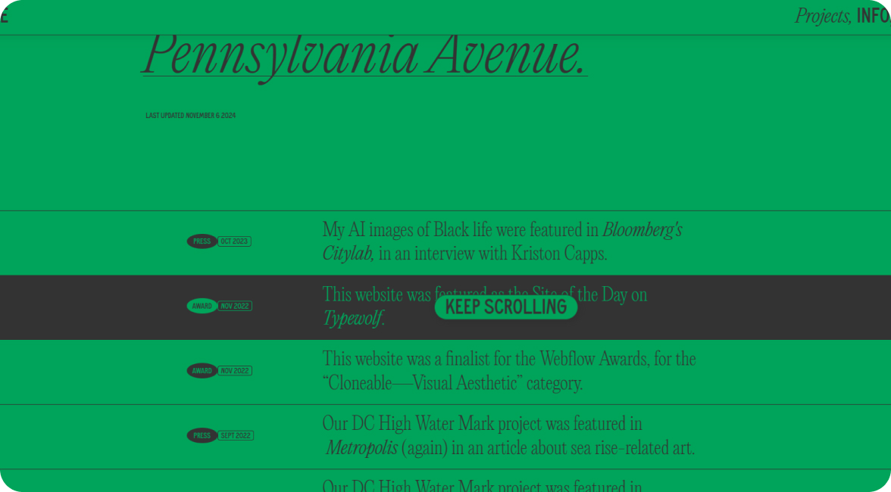
Скриншот сайтаWayside studio
Микровзаимодействие - это:
1. Мелкие, но значимые детали интерфейса. Анимации при наведении курсора на элементы. Подсветка активных ссылок или элементов управления. Всплывающие подсказки, объясняющие функции элементов.
2. Быстрая визуальная обратная связь. Изменение состояния кнопок или полей при взаимодействии. Индикаторы загрузки или выполнения действий.
3. Плавные и интуитивные переходы. Анимированные переходы между страницами или разделами сайта. Плавная прокрутка при переходе по ссылкам.
Компоненты (Components)
Компоненты — отдельные, повторно используемые элементы дизайна.
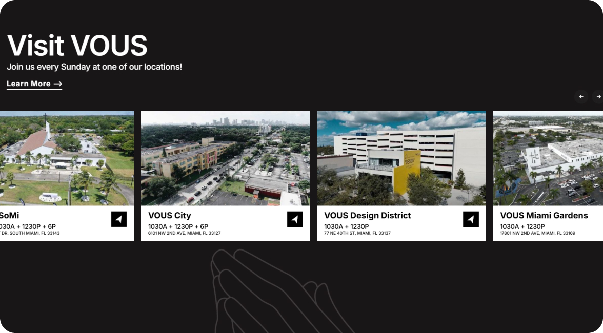
Скриншот сайтаVOUS Church
Примеры компонентов в веб-дизайне::
1. Кнопки Различные виды кнопок (первичные, вторичные, с иконками и т.д.) Кнопки с разными состояниями (обычное, при наведении, активное и т.д.)
2. Формы Поля ввода текста. Выпадающие списки. Чекбоксы, радио-кнопки. Кнопки отправки формы.
3. Меню. Главное меню сайта. Выпадающие подменю. Мобильное меню.
Модульная сетка (Grid System)
Модульная сетка — система расположения элементов на странице, основанная на использовании вертикальных и горизонтальных линий, которые делят пространство на ровные ячейки или модули.
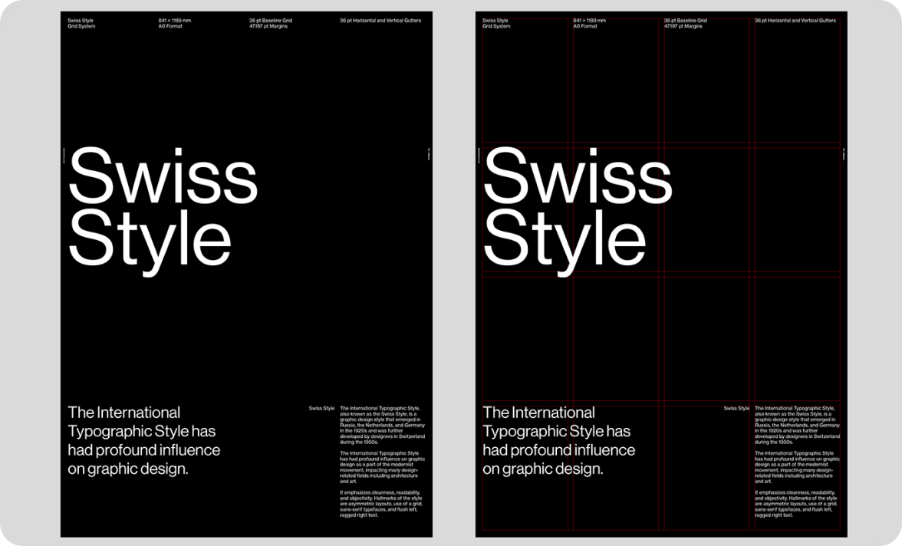
Изображение: Stephen KelmanBehance
Брендинг (Branding)
Брендинг — создание и продвижение уникального визуального образа бренда в онлайн-среде.
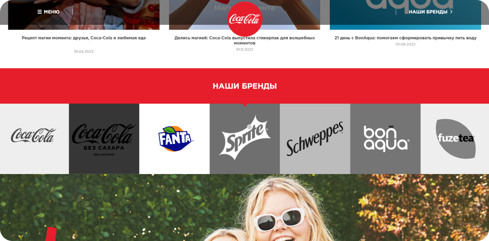
Скриншот сайтаCoca Cola
Брендинг - это:
1. Визуальная идентификация бренда. Разработка логотипа, фирменных цветов, шрифтов и других визуальных элементов. Создание узнаваемого и последовательного стиля оформления сайта.
2. Разработка бренд-бука. Формализация правил использования визуальных элементов бренда. Определение стилистики контента, фотографий, иллюстраций и других медиа.
3. Применение бренда на сайте. Использование логотипа, фирменных цветов и шрифтов в дизайне. Создание узнаваемого и запоминающегося визуального стиля.
4. Повышение узнаваемости и запоминаемости. Формирование устойчивой ассоциации между брендом и его визуальным образом. Повторение фирменных элементов для укрепления их в сознании пользователей.
Детализация (Fidelity)
Детализация — процесс доработки и проработки всех элементов интерфейса до мельчайших деталей.
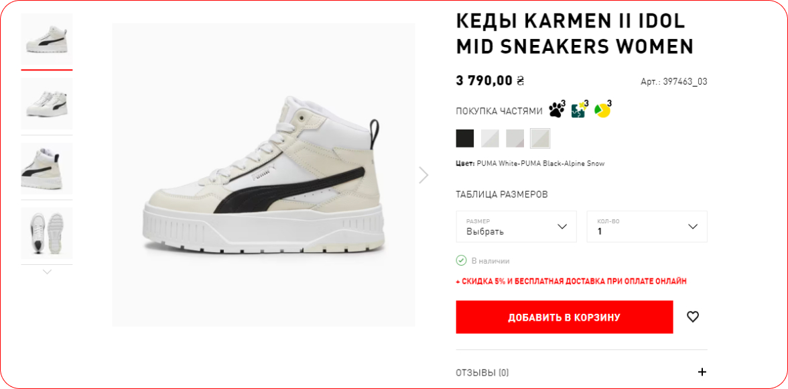
Скриншот сайтаPuma
Для каждой расцветки товара отдельное изображение.
Детализация - это:
1. Тщательная проработка каждого элемента дизайна. Кнопки, поля ввода, иконки, заголовки и другие компоненты. Проработка их внешнего вида, размеров, взаимного расположения.
2. Уделение внимания мелочам. Отступы, межстрочные интервалы, размеры шрифтов. Тени, градиенты, эффекты наведения и другие визуальные детали.
3. Создание продуманных переходов и анимаций. Плавное открытие/закрытие модальных окон, выпадающих меню и т.д. Анимации взаимодействия, например, нажатия на кнопку.
4. Обеспечение визуальной гармонии. Согласованность стилей и элементов по всему сайту. Соблюдение пропорций, баланса и ритма на странице.
Закон Фиттса (Fitts' Law)
Закон Фиттса — ринцип, описывающий, как размер и расположение интерактивных элементов (например, кнопок, ссылок) влияют на их удобство использования.
Закон Фиттса - это:
1. Размер элемента. Чем больше размер интерактивного элемента, тем легче им пользоваться. Крупные кнопки и ссылки проще нажимать, чем мелкие.
2. Расстояние до элемента. Чем ближе расположен интерактивный элемент, тем быстрее до него можно "дотянуться". Элементы, находящиеся близко к курсору или пальцам, легче задействовать.
3. Баланс размера и расстояния. Если элемент маленький, его нужно располагать ближе к пользователю. Если элемент большой, его можно разместить дальше, и пользователю будет все равно удобно.
4. Применение на практике. Создание достаточно крупных кнопок и ссылок для удобного нажатия. Размещение важных интерактивных элементов в зонах, удобных для взаимодействия. Использование дополнительных целевых областей вокруг элементов.
Практика
Закон Фиттса
Создай интерфейс для мобильного приложения (например, приложение для заказа такси). Разработай экран "Заказ такси", где будет кнопка "Вызвать такси". Примени Закон Фиттса, увеличив размер кнопки в соответствии с ситуацией, когда она будет активно использоваться. Измерь и сравни эффективные расстояния для различных элементов интерфейса, таких как кнопки и иконки, и оптимизируй их расположение.
Детализация
Выбери продукт (например, обувь) и создай макет страницы. Подумай о деталях — добавь вариации цвета, размеры, отзывы и другие элементы, которые могут помочь пользователю.
Адаптивный дизайн
Начни с дизайна обычной версии сайта для десктопа. Определи ключевые элементы страницы. Затем создай версию для планшета и мобильного устройства, адаптируя элементы к меньшим экранам.